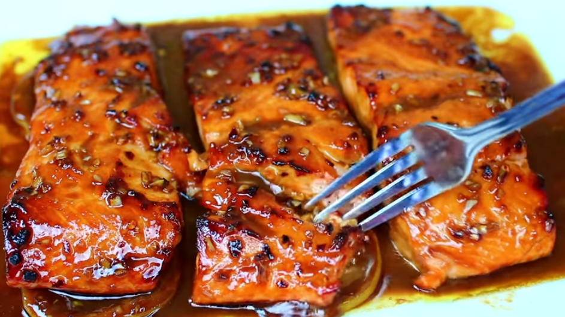

Honey Garlic Glazed Salmon

Description
This honey garlic glazed salmon recipe is the easiest most delicious way you could ever cook salmon.
The salmon is glazed in a delicious honey garlic sauce that is so flavorful and delicious.
The salmon comes out very moist and melts in your mouth .
Ingredients
- 1 and 1/2 lbs Salmon
- 2 Tbs melted butter
- 2 Tbs olive oil
- 2 Tbs soy sauce
- 2 Tbs honey
- 4 cloves garlic
- 2 Tbs brown sugar
- 2 Tbs dijon mustard
- 1/4 tsp red pepper flakes
Steps
- Make the sauce
- Cover salmon in the sauce
- Put in the oven on "broil" for 10 minutes
- Rebase the sauce
- Put in the oven on "broil" for 5 minutes
- Enjoy!